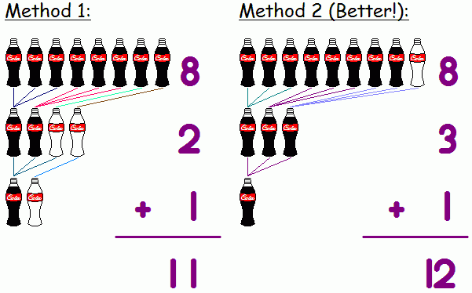

|
Problem C : Cola |
|
Time limit: 10 seconds |
You see the following special offer by the convenience store:
" A bottle of Choco Cola for every 3 empty bottles returned "
Now you decide to buy some (say N) bottles of cola from the store. You would like to know how you can get the most cola from them.
The figure below shows the case where N = 8. Method 1 is the standard way: after finishing your 8 bottles of cola, you have 8 empty bottles. Take 6 of them and you get 2 new bottles of cola. Now after drinking them you have 4 empty bottles, so you take 3 of them to get yet another new cola. Finally, you have only 2 bottles in hand, so you cannot get new cola any more. Hence, you have enjoyed 8 + 2 + 1 = 11 bottles of cola.
You can actually do better! In Method 2, you first borrow an empty bottle from your friend (?! Or the storekeeper??), then you can enjoy 8 + 3 + 1 = 12 bottles of cola! Of course, you will have to return your remaining empty bottle back to your friend.

Input consists of several lines, each containing an integer N (1 ≤ N ≤ 200).
For each case, your program should output the maximum number of bottles of cola you can enjoy. You may borrow empty bottles from others, but if you do that, make sure that you have enough bottles afterwards to return to them.
8
12
Note: Drinking too much cola is bad for your health, so... don't try this at home!! :-)